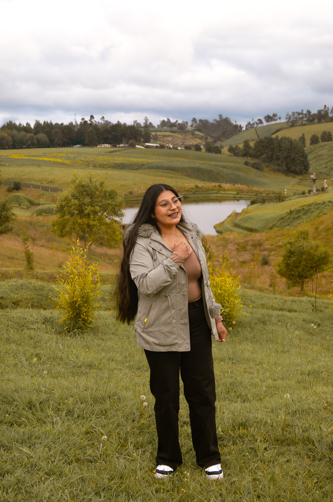
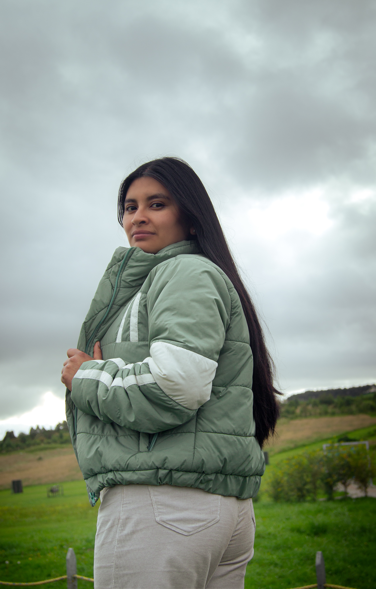
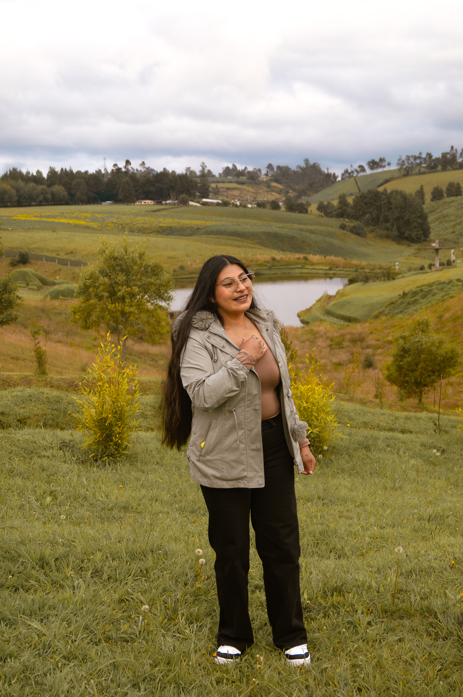
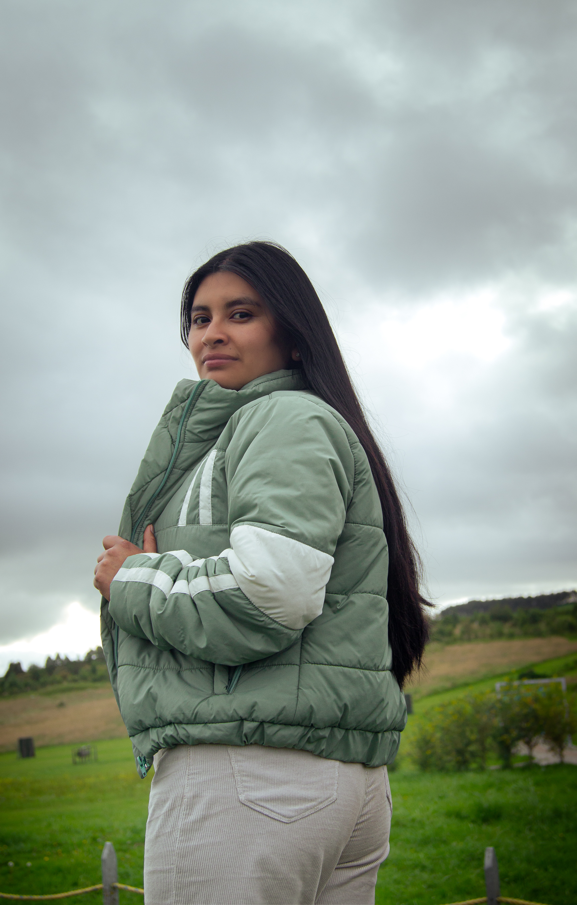
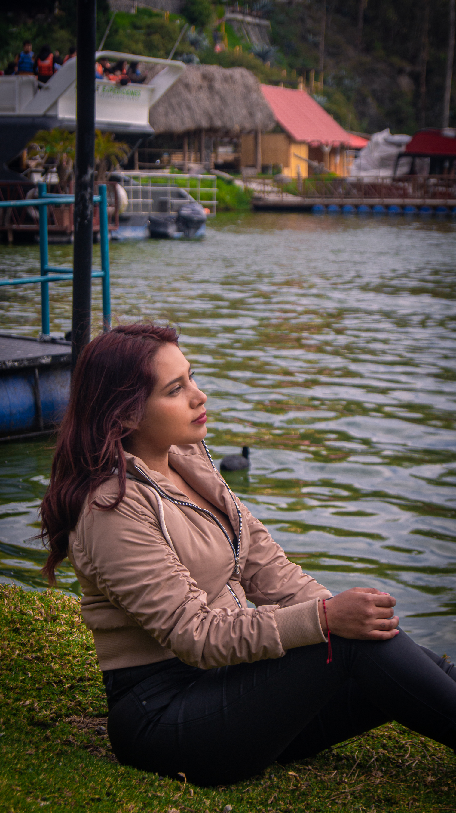
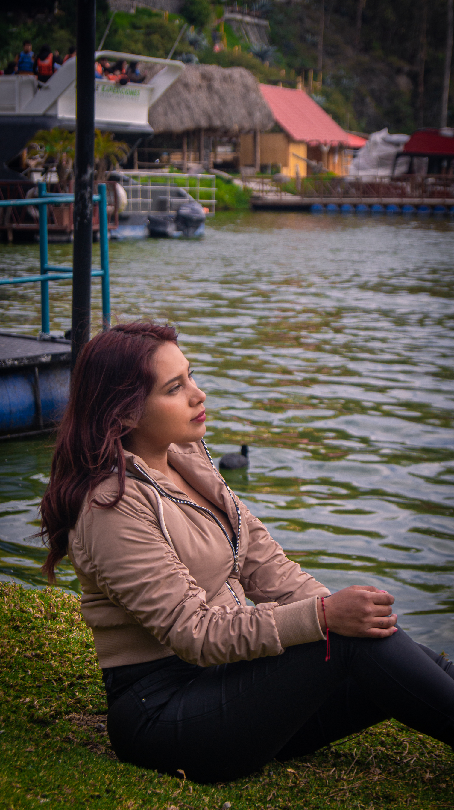

Conoce un poco más sobre mi pasión por la fotografía
Mi nombre es Steven Antamba, soy fotógrafo profesional y te doy la bienvenida a mi página web.
Me dedico a la fotografía desde hace 2 años, habiéndome especializado en publicidad, retrato y contenido visual creativo. He trabajado con marcas, personas y proyectos diversos que me han llevado a explorar la belleza en todas sus formas.
He compartido lo que aprendo mediante redes, talleres y colaboraciones. Mi trabajo refleja esa pasión constante por mejorar y compartir.
Ahora, he dado un paso más: ofrezco inspiración y servicios para ayudarte a ti también a descubrir lo que puedes lograr con una cámara y tu visión.
Gracias por visitar este espacio, espero que encuentres aquí algo que te inspire.

ENCUENTRA EL SERVICIO QUE ESTABAS BUSCANDO
Descubre los servicios profesionales que tengo para ofrecerte: sesiones de fotos personalizadas, producción de video y diseño gráfico creativo.

Captura momentos únicos con un enfoque creativo y profesional. Realizo sesiones personalizadas para retratos, parejas, eventos especiales y contenido para marcas.

Desde videoclips hasta reels impactantes para redes sociales, cuento historias visuales que conectan con tu audiencia. Producción completa: grabación, edición y dirección creativa.

Transformo tus ideas en piezas visuales atractivas. Diseño de identidad, flyers, banners, contenido para redes y más, con un enfoque limpio, moderno y funcional.


 





 
